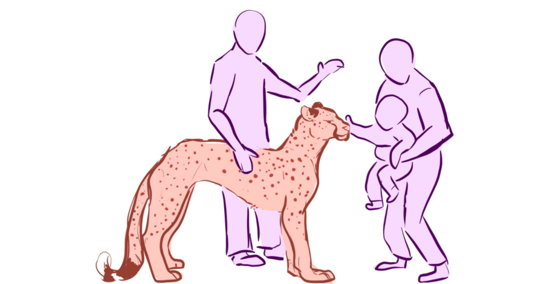

The Puppet Zoo!
The Puppet Zoo!
Berger Park Cultural Center
6205 N Sheridan Road, Chicago IL
Saturday, January 17 from 1-4 PM
This is a zoo like no other! Explore life-sized and whimsical puppets up close, while learning about real animals. Step into a world where every creature is made of strings, fabric, and recycled materials. The Puppet Zoo is exactly what it sounds like: a living menagerie of puppets brought to life before your eyes by puppeteers. This is an immersive environment filled with a wide variety of animal puppets—some hyperrealistic and life-sized, others whimsical, colorful, and full of character.
Unlike a traditional stage performance or zoo, this hands-on experience allows you to meet these creatures up close. Interact, learn, and build with the puppeteers, as this realm is not only filled with puppets, but face painting, and puppet-building workshops too! From the tiniest critters to larger-than-life beasts, the Puppet Zoo blends art, storytelling, and natural science into one unforgettable adventure. Perfect for families, kids of all ages, and anyone curious about the wild world of puppetry and the animals that inspire them.
Emilie Wingate is a Chicago-based puppet fabricator with a focus on animals, hyperrealism, and pushing to create from 100% recycled materials, down to the glue! Art has been Emilie’s passion ever since the third grade, and she is grateful to say that it is now her life. She often works with companies such as the Chicago International Puppet Theater Festival, Rough House, and various smaller companies as a fabricator and an occasional performer. It is her hope to bring more light to the world through the art of puppetry, and the joy of animals.
This event is being shared at Berger Park Cultural Center as part of Movement Studies – a programming series investigating social and environmental transitions. This project is partially supported by grants from the Illinois Arts Council Agency; Gaylord and Dorothy Donnelley Foundation; Reva and David Logan Foundation; and Teiger Foundation; as well as in-kind support from Chicago Park District.